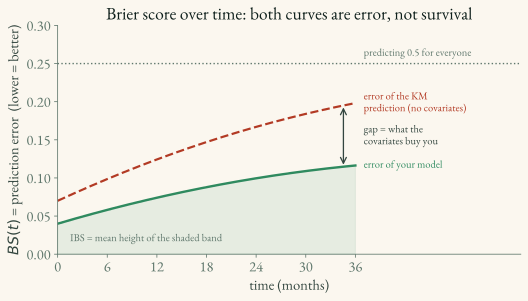

Brier Score
The Brier score measures overall probabilistic prediction error at a time horizon. It is affected by both calibration and discrimination: well-calibrated probabilities can still score poorly if they do not distinguish patients, and a well-ranked model can score poorly if its probabilities are miscalibrated. Use a calibration curve when calibration itself is the target.
Definition
At a fixed time t, the Brier score is the mean squared error between the predicted survival probability and the observed outcome:
BS(t) \;=\; \frac{1}{n}\sum_{i=1}^{n}\Big( \underbrace{S(t \mid x_i)}_{\text{predicted prob. of surviving past } t} \;-\; \underbrace{\mathbf{1}(T_i > t)}_{\text{1 if actually survived past } t,\ \text{else } 0} \Big)^2
The indicator \mathbf{1}(T_i > t) is the ground truth: 1 if subject i was still event-free at t, 0 if the event had already happened. A perfect model predicts S(t \mid x_i) = 1 for survivors and 0 for those who failed, giving BS(t) = 0.
Worked example — one time point. Evaluate at t = 12 months for three patients who all survived past 12 (so each ground-truth indicator is 1): | Patient | Predicted S(12) | Truth \mathbf{1}(T>12) | Squared error | |—|—|—|—| | A | 0.9 | 1 | 0.01 | | B | 0.6 | 1 | 0.16 | | C | 0.8 | 1 | 0.04 |
BS(12) = (0.01 + 0.16 + 0.04)/3 \approx 0.07. Patient B hurts the score most — the model under-predicted a survivor’s chances.
Inverse Probability of Censoring Weighting (IPCW)
The raw score above breaks for censored subjects: if subject i is censored before t, their status at t is unknown. Let \hat G(u) estimate the probability of remaining uncensored through u. The usual IPCW estimator is:
BS_{\text{IPCW}}(t) = \frac{1}{n}\sum_{i=1}^{n} \left[ \frac{\mathbf{1}(T_i \le t,\,\delta_i=1)}{\hat G(T_i^-)}\,\hat S(t\mid x_i)^2 + \frac{\mathbf{1}(T_i > t)}{\hat G(t)}\,\big(1-\hat S(t\mid x_i)\big)^2 \right]
Subjects with an observed event by t and subjects known to be event-free at t contribute with censoring weights. Subjects censored before t have unknown status and contribute neither term. This correction assumes the censoring model is appropriate; the packages estimate it from training follow-up.
Integrated Brier Score (IBS)
A single time point only tells part of the story. The IBS averages BS(t) across a time range [t_{\min}, t_{\max}]:
IBS \;=\; \frac{1}{t_{\max} - t_{\min}} \int_{t_{\min}}^{t_{\max}} BS(t)\, dt
This is a standard one-number summary of probabilistic prediction error across a specified follow-up window. Always report that window because IBS values from different intervals are not directly comparable.

Interpretation
- Lower is better: 0 is perfect. Predicting 0.5 for everyone produces 0.25, but an uninformative prevalence-based prediction can score below 0.25 when the outcome is imbalanced; a poor model can score above 0.25.
- Compare against a Kaplan–Meier baseline fit without covariates (see
3.3) on the same evaluation window.
Key takeaways for applied ML scientists
- It is not a calibration metric by itself. Report it alongside the C-index and a calibration curve or calibration slope/intercept at clinically relevant horizons.
- Use the IPCW version with any real (censored) data — the raw score is biased. The packages do this for you, but they need the training survival arrays to estimate the censoring weights.
- Keep evaluation times inside the follow-up window (see pitfall below) — this is the single most common way to get a meaningless Brier score.
- Prefer the IBS for model selection when performance across a window matters; use individual BS(t) values to diagnose when prediction error grows.
Implementation
scikit-survival is the reference implementation. Both functions take the training and test structured arrays (for the IPCW censoring estimate) plus the model’s predicted survival probabilities S(t) at each evaluation time (see 04_packages/4.4_scikit_survival.md):
from sksurv.metrics import brier_score, integrated_brier_score
import numpy as np
times = np.percentile(time_test[event_test], [25, 50, 75])
# Also verify that these times lie inside the test follow-up range and the
# support of the censoring distribution estimated from y_train.
surv_prob = np.vstack([fn(times) for fn in model.predict_survival_function(X_test)])
t, bs = brier_score(y_train, y_test, surv_prob, times) # BS at each time
ibs = integrated_brier_score(y_train, y_test, surv_prob, times) # single summarytorchsurv provides a native-PyTorch/GPU implementation (see 04_packages/4.3_torchsurv.md); compute it on the accumulated evaluation cohort rather than averaging separate batch scores. auton-survival includes IBS and reporting utilities (see 04_packages/4.5_auton_survival.md).
Pitfall — evaluation times. Keep
timeswithin test follow-up and within the range over which the training censoring distribution is estimable. Near the tail, few subjects remain at risk and IPCW weights can become unstable; choose a clinically relevant, pre-specified window with adequate support rather than using the maximum follow-up mechanically.
Brier complements, not replaces, the C-index. A model can rank well yet have high probability error. Report both, and add a calibration plot when calibration is a stated goal. See
3.1.